欢迎大家使用雷速的服务
- 开始
- Welcome
- 套餐列表
- 测速图
- 常见问题答疑
- 下载和教程
- Windows v2rayN
- Windows Clash
- 安卓v2rayNG
- 安卓Clash
- IOS Shadowrocket
- Mac ClashX
Windows v2rayN教程
- 第一步：点击下载v2rayN客戶端，解压后请双击打开v2rayN.exe应用程序。
- 第二步：打开雷速网站首页，找到“通用v2ray订阅链接”，点击会提示复制成功
- 第三步：回到v2rayN按照以下步骤，设置订阅链接
- 第四步：在右小角任务栏中找到v2rayN的图标，鼠标右键点击选择http代理，选择代理的模式，这里建议选择PAC模式，图标变颜色了就说明开启代理程序了 现在你可以打开Google，YouTube畅快体验了
- 怎么退出v2rayNG，同样是找到右下角v2ray小图标，鼠标右键，选择关闭http代理，退出
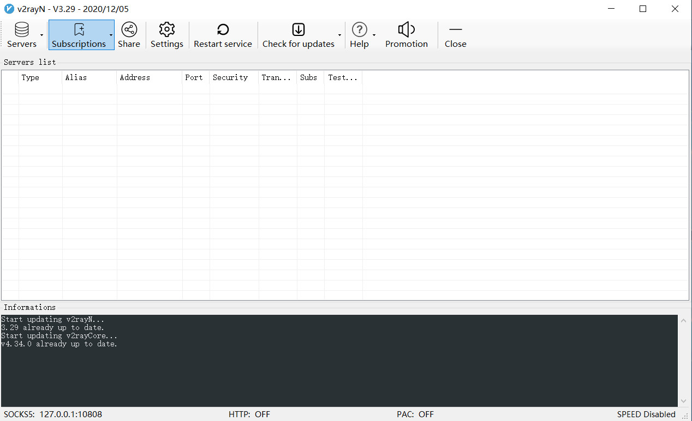

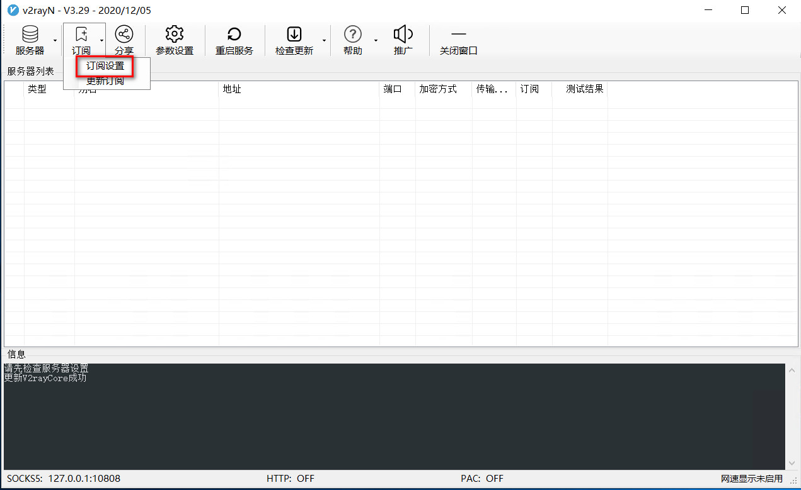
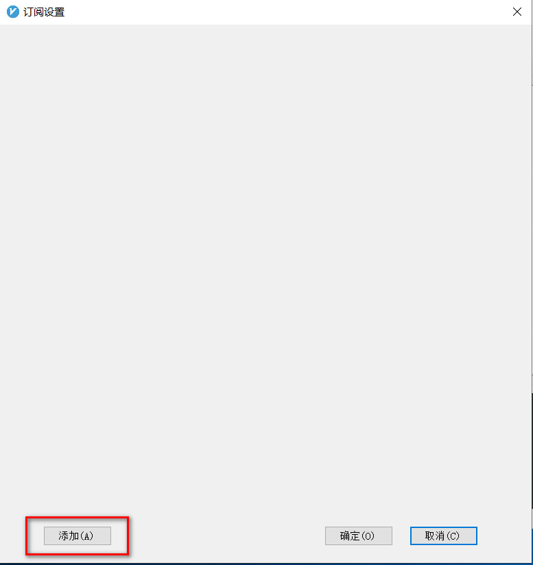
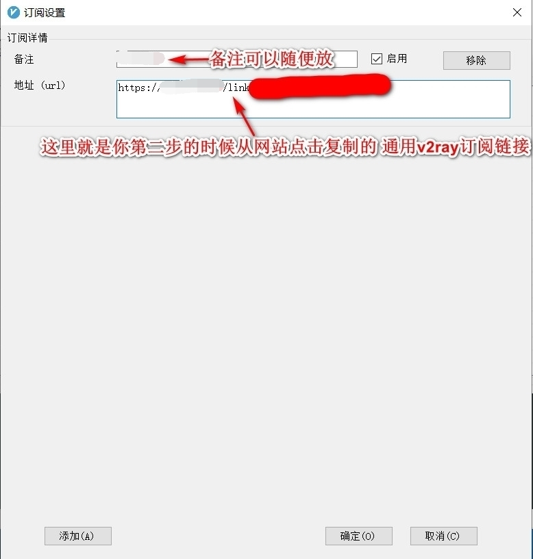
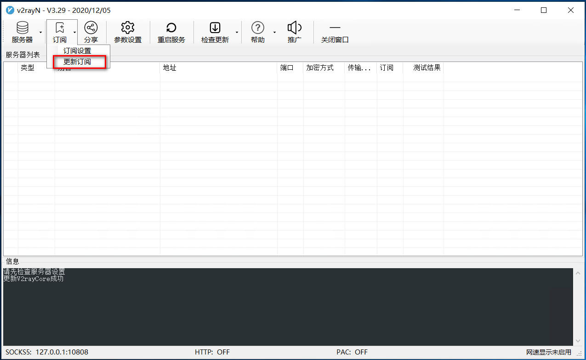
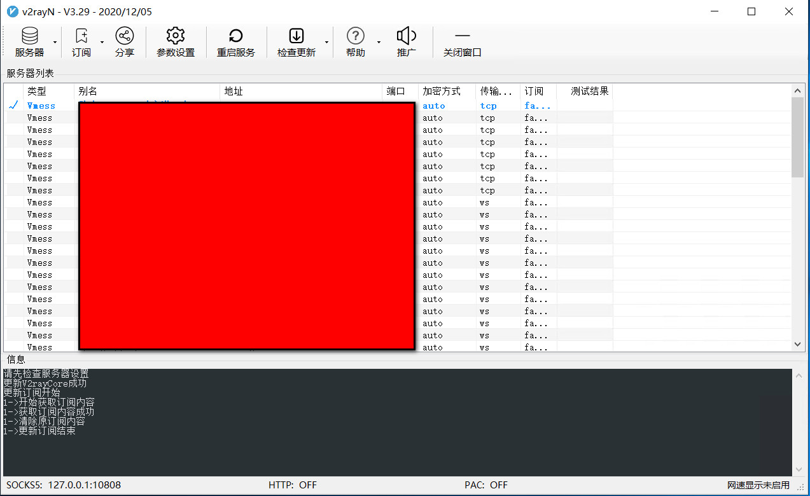
完成以上步骤就更新订阅成功了，单击选择你要使用的节点，按回车切确认切换节点
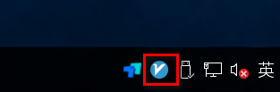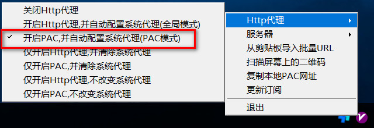
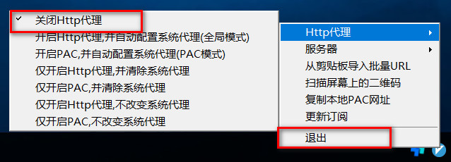
假如订阅更新不成功
有时候可能因为本地网络原因，订阅设置了以后，更新会不成功，没有节点订阅出来，这个时候请按照以下步骤操作
- 第一步：打开网站，选择节点列表
- 第二步：随便点击一个节点，在弹出来的界面中复制所有vmess部分代码
- 第三步：回到v2rayN，点击服务器，通过剪贴板导入
- 第四步：导入后，你会看到一个节点，选中它，开启v2rayN代理，再重新更新一次订阅
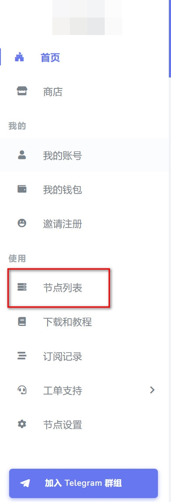
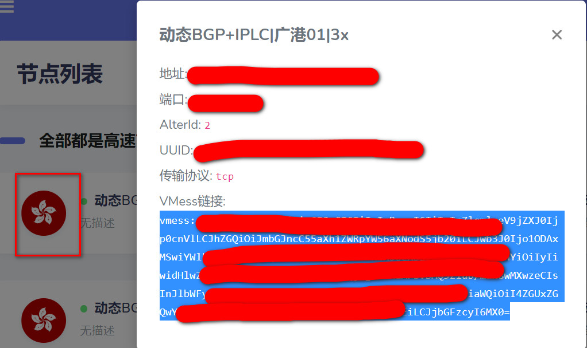
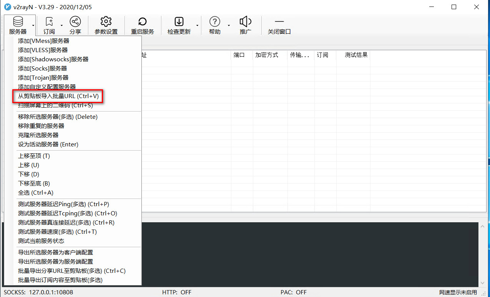